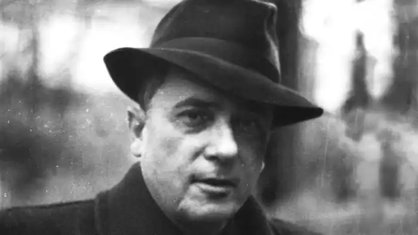
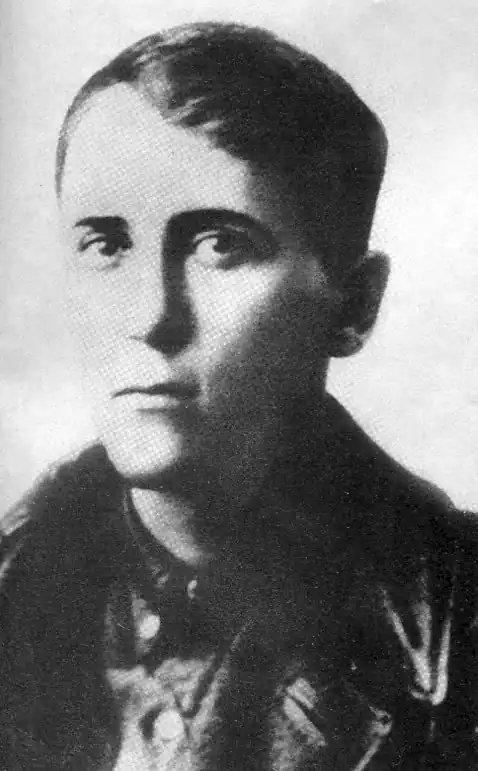
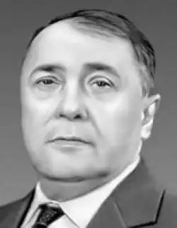

ВОЛОДИМИР МИКОЛАЙОВИЧ СОСЮРА
1898 (6.01) — 1965 (8.01)
Володимир Миколайович Сосюра — видатний лірик нашої епохи, автор понад 80 збірок поезій, широких епічних віршованих полотен (поем), роману "Третя Рота". З творчістю Володимира Сосюри українська література поповнилась новими темами героїчної і трагічної боротьби нашого народу за свободу і незалежність, за краще життя, збагатилась зразками високої громадянської й інтимної лірики, образами і картинами індустріального Донбасу, його людей. Любов до рідного донецького краю стала провідним мотивом його поетичної творчості. З синівською відданістю він признавався в одному із своїх віршів: І сниться, все сниться й донині берізки тонкий силует. Хоч знаний я всій Батьківщині, а все ж я донецький поет. Або в іншому творі: Швидкий Дінець, і шум сосон, і аромати м’яти-рути, як золотий дитинства сон, мені ніколи не забути.Складною, а інколи суперечливою була доля поета. Ще не про все з його життєвого шляху ми сьогодні знаємо. Хоча б, здавалося, розкрив душу читачеві письменник , нічого не приховав у своєму прозовому творі —романі "Третя Рота" (повністю виданий 1988 р.). Тут він розповів нам про те , як глянув у вічі смерті у полоні червоних. З цього твору взнаємо, що насправді пішов Сосюра добровольцем не до червоноармійців, а до війська Української Народної Республіки. Ці факти були відомі небагатьом. Їх приховували, щоб у свідомості мільйонів сформувати образ відданої офіційній владі людини, палкого пропагандиста радянського способу життя. І треба сказати, що це вдавалося зробити через сотні тисяч шкільних підручників, радіо, кіно, пресу. Та й сам Володимир Миколайович багатьма своїми творами допомагав творити цей міф про себе, відходячи від життєвої правди. Влада цупко тримала його у своїх руках, даруючи життя поету взамін на патріотичні радянські вірші. А щоб Сосюра був слухнянішим, було арештовано і запроторено до таборів його дружину Марію. Самого письменника шляхом цькувань неодноразово було доведено до психічних зривів, до сталінських "психушок". І все ж Володимир Сосюра попри всілякі життєві незгоди зміг бути справжнім поетом. У його поетичному доробку знаходилось місце поезіям, які будили у читачів відчуття справжньої краси, душевної щирості і людяності. Багато віршів поет присвятив коханню, поваги до природи, до людини праці. Та про що б поет не писав, він шукав і знаходив можливість розповісти про свій вугляний край, про рідні серцю Наддінців’я, про нев’януче кохання, яке тут зародилося : Задума, і спомини, й спокій... Знайомі і милі місця, де гай задивився високий в глибокії води Дінця. І гори крейдяні, і поле, осяяні, повні окрас, я вас не забуду ніколи, хоч в місто пішов я од вас.А така поезія, як "Любіть Україну", виразила найпалкіші прагнення сотень тисяч, мільйонів українців , що хотіли бачити свою країну вільною і незалежною. У цьому творі поет зміг піднятись над вузькокласовими і партійними інтересами тодішньої ідеології й оспівати самоцінність України як держави, як сповненої самоповаги і сили країни. Поет писав: Любіть Україну, як сонце любіть, як вітер, і трави, і води, в годину щасливу і радісну мить, любіть у годину негоди... Любіть Україну у сні й наяву, вишневу свою Україну, красу її вічно живу і нову, і мову її солов’їну...Цей вірш як спалах правдивого вогню проривався серед темряви покори й облудного славослів’я на честь кривавих керманичів держави і місцевих "вірних синів радянської України". Сосюра вказував народу істинні, нефальшиві цінності життя. Цього простити йому влада не могла. Разом з тим і позбавити поета життя чи свободи власть імущим було невигідно. Почалося привселюдне і широкомасштабне оббріхування поета, звинувачення в усіх смертних гріхах. Нелегким був життєвий путь поета. З болем і журбою сприймав він страшну наругу над собою і над своїм народом. Та все ж наперекір стражданням з його душі , з його поетичного серця виривався спів любові до життя, до прекрасної нев’янучої молодості, до милої серцю Донеччини: Там, як ніде синіє рідне небо, тече вода Дінця миліш від вод усіх. О, земле ти моя, нема рідніш за тебе! До старості тебе у пісні я зберіг.За це ми й любимо палке слово нашого поета-земляка, вивчаємо в школах і вузах, зберігаємо у серцях . (В.Оліфіренко)